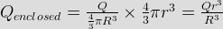
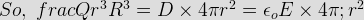
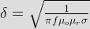
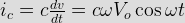
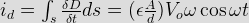
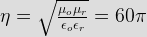
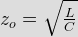

- A solid sphere made of insulating material has a radius R and has a total charge Q distributed uniformly in its volume. What is the magnitude of electric field intensity, E, at a distance r (o<r<R) inside the sphere?
Let we assume a Gaussian surface inside the sphere (x < R) From Gauss’s law
ψ = Q enclosed

Again Qenclosed = surface integral of (D.ds)
 - A plane wave in a homogeneous medium has E = 50 sin(108t + 2z) uy V/m. What is the direction of wave propagation?
A wave E = 50 sin(108 t – 2z) uy has component of a E in y direction and it travel in z direction. The given wave with +2z shall move in the negative z direction.
- If n is the polarization vector and k is the direction of propagation plane electromagnetic wave, them
The polarization vector and direction of travel are perpendicular to each other. So, Dot production of two vector is zero.
- Which statement is not correct for the transmission line parameter R, L, G and C?
G is not equal to I/R, where G is conductance per unit length of the conductor and is due to the dielectric medium separating the conductor.
- Skin depth is proportional to
Skin depth is given as

. - The frequency of the power wave associated with an electromagnetic wave having field as E = e-z/δ cos(ω - zδ) is given by
Here E = e - zδ cos(ω t – z/δ)
Where, ω is the radian frequency of E. It is same the radium frequency of the associated H wave. The frequency of power wave is double the corresponding frequency of E or H wave. Thus the radian frequency of 2ω and cyclic frequency = 2ω/2π = ω / π. - An ac voltage source v = vo sinω+ is connected across a parallel plate capacitor C. If conductor current & id respectively then which is true among following relation?
The conduction current in the connecting wire

For Parallel plate capacitor of area A and plate thickness d,
C = ε A/d
Electric field E in the dielectric is E = v/d.
So, D = ε E = ε (Vo/d) sin ωt
Displacement current id

Therefore, ic = id. - What is the value of skin depth as 100 Hz in a material having μr = 1.0 and &sigma = 3.60 × 107 s/m?
Skin depth of a material is given as,
 .
. - A plane wave magnetic field is represented by Bx = cos(y – ct). The electric and magnetic fields will be zero in the direction
Wave propagating in (+ y) direction. H in (+ x) direction Then E will be in (+ z) direction.
So, Ex = Ey = 0 and By = Bz = 0. - Which following statement are not true for line parameters R, L, G and C of transmission line?
For each line LC = μ ε G/c = σ/ε.
- In a lossless medium the intrinsic impedance η 60π and μr = 1. The relative dielectric constant εr shall be
For free space ηo = & radiac; (μ/ε = 12 π for any lossless medium with μr= 1

So ε r = 4. - When a lossy capacitor with a dielectric of permittivity ε and conductivity σ operates at a frequency ω the loss tangent for the capacitor is given by
As C = Aε/d
R = d/(σ A)
CR = A ε/d
d/(&sigma A) = ε/σ
tan δ = I R/Ic = V/(R.V&omega c) = I/(ω CR)
So, tan δ = I(ω ε/σ) = σ/(ω ε). - The characteristic impedance of a transmission on line is
Characteristic impedance of transmission line is given as,

So it is independent of length. - For a lossy transmission line, the characteristic impedance does not depend on
A transmission line is said to be lossless if both its conductor and dielectric are lossless or R = O and G = O
So characteristic impedance be,

Inductance and capacitance are not depends the load terminating the line. - For distortion less line which of following relation are true?
A distortionless line is one in which the attention constant α is frequency independent while the phase constant is linearly dependent on frequency. For this line, the condition applicable is R/L = G/C.
- If R = 84 ohm/Km, G = 10-6 mho/Km, H = 0.01 H/Km, C = 0.061 μ F/Km and frequency = 1000 Hz, then what is the value of propagation constant of the transmission line?
Z = R + jω L = 84 + j2π 100 × 0.01 = 84 + j 62.83 = 104.9 ∠ 36.8° ohm/Km.
Y = G + jω C = 383.27 × 10-6 ∠ 89.85° mho/Km.
So propagation constant by γ = &radiac; (yz). - In frec space E (z,t) = 103 sin(ωt - βz) uy v/m. What is the value of H (z,t)?
Direction of wave propagation (+z). So E × H must be (+z) direction.
Therefore E × H must be – ux
Now Ey/Hx = ηo = 377 (As free space)
Hx = 103/377 (A/m). - For a line characteristic impedance zo terminated is load zo/3, the reflection coefficient is
 .
. - The SWR on a lossless transmission line of the characteristic impedance 100 ohm is 3. The line is the terminated by
For a transmission line, reflection co-efficient,

Here ZL = 3 00 ΓL = 200/400 = ½ and SWR = 3. - The VSWR of transmission line is
 .
.
Design with  by SARU TECH
by SARU TECH
www.sarutech.com
Content Credited to electrical4u.com
Online Electrical Engineering Study Site